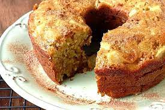

Receita bolo de maçã

-
Ingredientes:
-
- 2 xícaras de farinha de trigo
- 1 colher de sopa de fermento em pó
- 1 pitada de sal
- 3 maçãs grandes
- 2 xícaras de açúcar
- 1 colher de sopa de canela em pó
- 3 ovos
- 1 xícara de óleo vegetal
-
Modo de preparo:
-
- Unte e polvilhe com farinha um tabuleiro médio (23×35), ou uma fôrma de buraco no meio.
- Em uma tigela grande, peneirar a farinha e o açúcar. Juntar os demais ingredientes secos. Reservar.
- Descascar as maçãs, reservando as cascas. Picar em cubinhos.
- Bater no liquidificador os ovos, o óleo e as cascas da maçã.
- Juntar essa mistura na tigela com os ingredientes secos e misturar delicadamente.
- Junte as maçãs picadas, misture e despeje na assadeira.
- Asse por cerca de 40 a 50 minutos em forno médio.
- Depois de pronto polvilhar açúcar e canela.
Referência: Site de onde peguei a receita